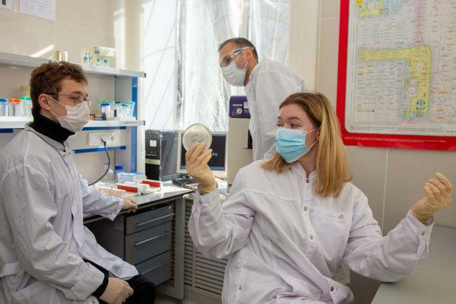

"Приоритет 2030": в ВятГУ осуществляется индивидуальное сопровождение и финансовая поддержка молодых
ученых
01.11.2023
Научно-исследовательская политика и политика в области инноваций и коммерциализации разработок

Одним из востребованных форматов стала текущая аттестация аспирантов «Научная сессия»
В рамках научно-исследовательской политики программы развития ВятГУ в вузе реализуется проект по созданию
системы индивидуального сопровождения научных и научно-педагогических кадров.
В этом году продолжена программа финансовой поддержки «Молодой ученый» для аспирантов, обучающихся платно.
Им предоставляется возможность получения ежемесячных денежных выплат, размер которых устанавливается
индивидуально в зависимости от количества и качества наукометрических показателей аспиранта.
В вузе реализован комплекс мероприятий по обеспечению эффективной научной деятельности аспирантуры. Одним из
результатов стала переориентация публикационной активности аспирантов на рецензируемые научные издания ВАК и
издания, индексируемые в международных базах данных. В этих изданиях зафиксирован прирост публикаций в два
раза.
Востребованным оказался новый формат аттестации аспирантов «Научная сессия». Это междисциплинарная
онлайн-сессия, технология которой включает, помимо доклада и собственно аттестации аспиранта, блок F&Q –
свод, анализ и урегулирование барьеров для эффективной работы над диссертационным исследованием аспиранта. В
2023 году формат дополнен информационным модулем по изменениям в системе государственной научной аттестации
в РФ, а также экспертной оценкой диссертационного исследования на предмет выявления, защиты и
коммерциализации полученных результатов интеллектуальной деятельности.